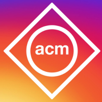

DevOps Committee Chair (May 2015 - March 2016)
- Helped to develop a prototype for an iOS checkin app to streamline the process of signing up and signing in for ACM events
DevOps Chair (May 2016 - Present)
- Oversees the development of two projects (the iOS checkin app and the ACM website)
- iOS checkin app is developed using Swift
- ACM website is developed using react.js